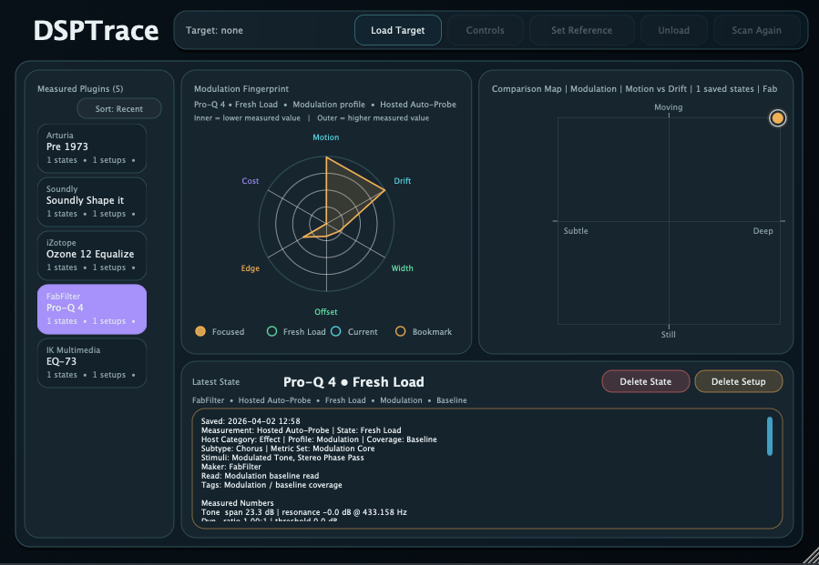
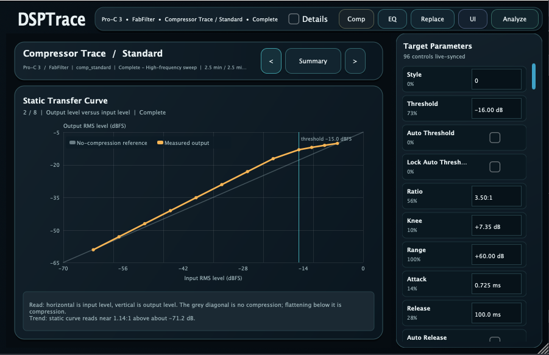
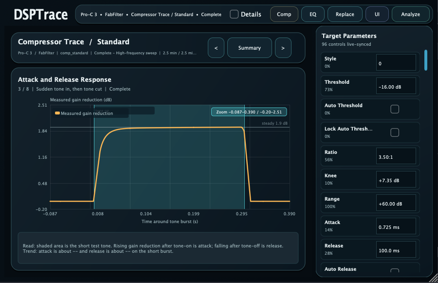

Beta — Public beta available.
Beta AU / VST Plug-in Measurement Host
DSPTrace is a beta analysis host for measuring audio plug-ins behave. The idea is to load a processor, send controlled test signals through it, sweep parameters, capture the result, and turn the response into graphs that are easier to compare than knob labels, marketing names, or listening notes alone.
DSPTrace 1.0.0 beta is available for macOS as an installer package. The Mac build supports AU and VST plug-ins only. AAX is not included. The Windows support is VST only.
Installer package for macOS. Supports AU and VST plug-in analysis. AAX is not included in this beta.


Compressor Trace is for dynamics processors. It focuses on input/output curves, threshold and knee behavior, ratio shape, makeup gain, attack and release timing, hold behavior, detector smoothing, and whether the plug-in reacts differently to short bursts than to steady-state tones.
EQ Trace is intended for frequency-shaping processors. It can help show the actual curve behind a band, how Q changes with gain, whether shelves tilt smoothly or create resonant edges, and how dynamic EQ behavior differs between quiet and loud test levels.
Saturation and clipping are difficult to describe from controls alone. A trace can show where harmonic content starts, how the transfer curve bends, whether the top and bottom halves behave symmetrically, and how drive, tone, bias, or output trim affect the result.
The same test can be run again after a plug-in update. That makes it easier to see whether a change is only a UI or preset change, or whether the processor itself now has different timing, level, filtering, or nonlinear behavior.
DSPTrace is not meant to replace listening. It is meant to make listening less vague. If a compressor feels punchy, the trace might show whether that comes from a slower attack, a release overshoot, a curved knee, or a hidden level compensation. If an EQ band feels wider than expected, a trace can show the real curve. If a saturator feels louder even after output trim, the trace can separate level change from harmonic change.
The useful result is a repeatable record: same plug-in, same version, same setting, same test signal, same graph. That makes the tool valuable for plug-in development, QA, documentation, education, and personal research.
DSPTrace 1.0.0 beta is available for macOS as a package installer. The Mac build supports AU and VST plug-ins only. AAX is not included. Windows support is VST3 only. AAX is not included on either platform.
Email: kjdevapphelp@gmail.com
If you want to suggest analysis workflows or plug-in types that DSPTrace should handle well, feel free to send them.